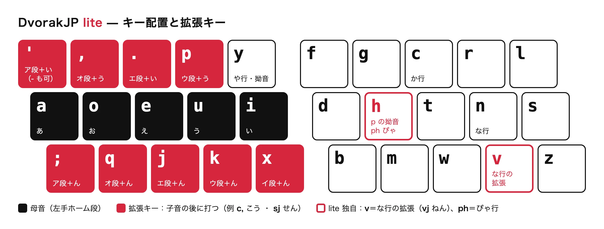

DvorakJP lite とは
DvorakJP の拡張ローマ字入力のうち、QWERTY のローマ字入力と競合しないものだけを集めたローマ字テーブルです。

設計思想
- QWERTY と共存する。
同じ変換表のまま、QWERTY ローマ字を今までどおりに打てます。
un.→うん。enpou→えんぽうkonbanha→こんばんは のような打ち方は変わりません。 - QWERTY ローマ字で打たない列にだけ、拡張を割り当てる。
k'やc,は QWERTY ローマ字では打たないので、k'→かい、c,→こう のように使えます。 - 衝突するものは採用しないか、別のキーに移す。
元祖 DvorakJP の
n.(ねい) やnk(ぬん) は、QWERTY ローマ字の「ん＋次の音」と区別できません。 そこで な行 の拡張は、Dvorak 配列でnの真下にあるvで打ちます（vj→ねん、v,→のう）。 - 記号キーの置き場所を選べる。
「ア段＋い」は
'と-のどちらでも打てます（t'/t-→たい）。
拡張キー
| キー | 意味 | 例 |
|---|---|---|
' - | ア段＋い | s' さい |
; | ア段＋ん | s; さん |
. | エ段＋い | s. せい |
, | オ段＋う | s, そう |
p | ウ段＋う | sp すう |
k | ウ段＋ん | sk すん |
j | エ段＋ん | sj せん |
q | オ段＋ん | sq そん |
x | イ段＋ん | sx しん |
拗音にも使えます（ky, きょう、sh, しょう、jp じゅう）。
ぴゃ行だけは、Dvorak 配列で p と y が同じ手で打ちにくいため、h でも拗音になります（pha ぴゃ、ph, ぴょう、php ぴゅう）。
詳しい仕様は GitHub の README を見てください。
導入方法
1Google日本語入力のローマ字テーブルを更新する
- メニューバーの入力メニューから、Google日本語入力の「環境設定…」を開きます。
- 「一般」タブの「ローマ字テーブル」で「編集…」を押します。
- 左下の「編集」→「インポート…」で、ダウンロードした
romantable_dvorakjplite.txtを選びます。 - 「OK」→「適用」で保存します。
2Dvorak 配列を追加する
- 「システム設定」→「キーボード」→「入力ソース」の「編集…」を開きます。
- 「＋」を押し、「英語」から「Dvorak」を追加します。
- Google日本語入力でかな入力をしたときも Dvorak 配列で打てるか確かめてください。
準備中
Windows での導入方法が確立できたら公開します。
Linux 版の Google日本語入力はないので、オープンソース版の Mozc（fcitx5-mozc など）を使います。ローマ字テーブルの形式は同じです。
1Mozc のローマ字テーブルを更新する
- Mozc の設定ツールを開きます。
ディストリビューションによっては/usr/lib/mozc/mozc_tool --mode=config_dialog/usr/libexec/mozc/mozc_toolにあります。 - 「一般」タブの「ローマ字テーブル」で「編集…」を押します。
- 左下の「編集」→「インポート…」で、ダウンロードした
romantable_dvorakjplite.txtを選びます。 - 「OK」→「適用」で保存します。
2Dvorak 配列を追加する（fcitx5 の場合）
fcitx5-configtoolを開きます。- 入力メソッドのグループで、キーボードレイアウトを「English (Dvorak)」にします。
- 同じグループに「Mozc」を追加します。Mozc はグループのレイアウトに従うので、かな入力も Dvorak 配列になります。
練習
ローマ字ベースの長文タイピング練習です。
準備中
DvorakJP lite の拡張入力を使って、長文を打つ練習ができるようにする予定です。